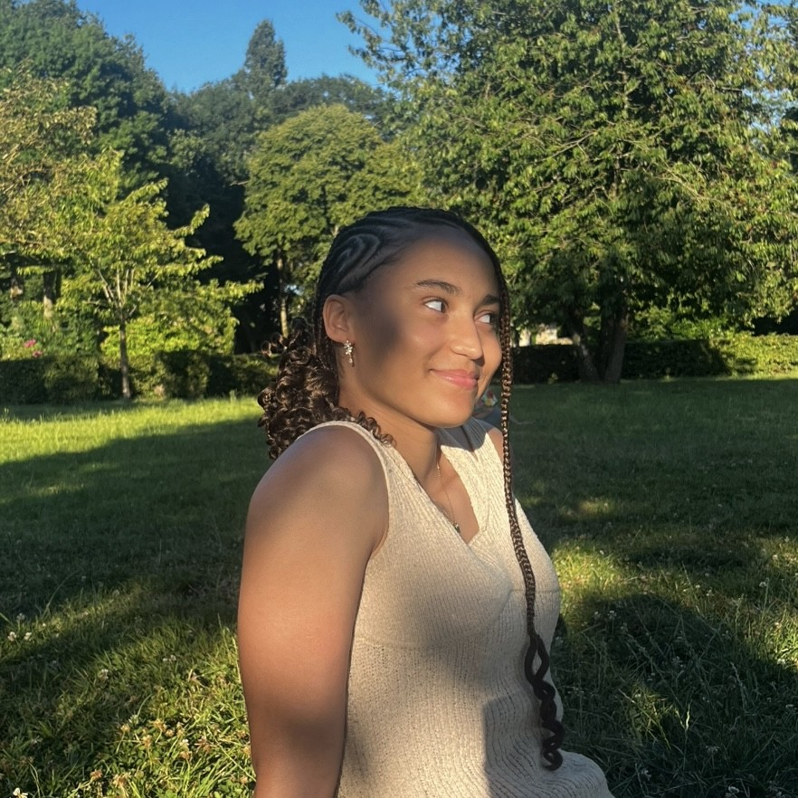

Hi, I'm Florence
Computer Science Student

I'm Florence, a Computer Science student with a strong passion for cybersecurity and creative problem-solving. My studies have provided me with a solid foundation in data structures and basic concepts in multiple languages like Java, C++, and C. I also have experience with SQL. I'm eager to learn new technologies and dive into challenging projects that push me to grow!
I'm currently focused on building my skills in full-stack development, and I'm actively seeking an internship. When I'm not coding, I enjoy listening to music, reading, or playing video games.
Development of a student management desktop application using Java Swing

Development of a to-do list application for managing tasks.
-